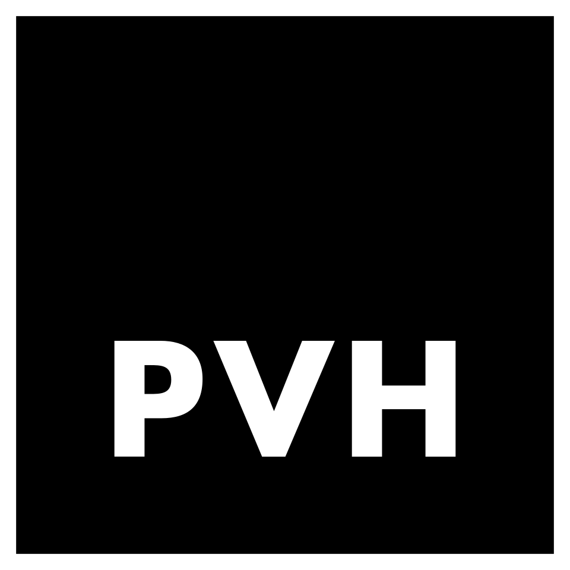

PVH Corp.
PVH Corp.는 Tommy Hilfiger와 Calvin Klein 등의 브랜드를 보유한 미국의 의류 회사이다. 이전 명칭은 Phillips-Van Heusen Corporation이며 본사는 뉴욕 맨해튼에 있다.
최종 업데이트

PVH Corp.는 어떤 브랜드인가
PVH는 Tommy Hilfiger와 Calvin Klein을 보유한 미국 의류 회사이다. Kenneth Cole New York과 Michael Kors 같은 브랜드는 라이선스로 다룬다.
본사는 뉴욕 맨해튼에 있으며 뉴저지 Bridgewater에 정책 수립 사무실을 두고 있다. 2023년 4월 기준 전 세계 직원이 120,000명이 넘었고 인도, 스리랑카, 방글라데시, 중국, 베트남, 온두라스 등에 거점을 두었다.
회사는 셔츠 제조에서 출발해 여러 브랜드 인수를 거쳐 성장했다. 2020년 9월 Stefan Larsson이 2021년 2월 1일부터 CEO를 맡는다고 발표했으며, 전임 Emanuel Chirico는 회장직을 유지했다.
PVH Corp.는 어떻게 시작되고 성장했나
뿌리의 일부는 1881년 Moses Phillips와 아내 Endel이 펜실베이니아주 Pottsville에서 셔츠를 손으로 만들어 수레로 탄광 노동자에게 판 데서 시작한다. 이 사업은 뉴욕의 셔츠 사업으로 커졌다.
별도로 Dramin Jones가 1865년경 D. Jones & Sons를 세웠고, 이 회사는 1907년 M.
Phillips & Sons와 합병해 Phillips-Jones가 되었다. 이후 Van Heusen을 인수하면서 1957년 Phillips-Van Heusen으로 이름을 바꾸었다.
2011년에는 사명을 PVH로 변경했다.
PVH Corp.의 브랜드 아이덴티티는 무엇인가
1881년 셔츠 제조에서 출발해 Tommy Hilfiger와 Calvin Klein을 함께 거느리게 된 미국 의류 기업이라는 점이 다른 브랜드와 구별된다.
PVH Corp.의 대표 제품과 서비스는 무엇인가
Tommy Hilfiger와 Calvin Klein이 핵심 브랜드이다. Tommy Hilfiger는 2010년 3월 15일에 인수했고, Calvin Klein은 2002년에 인수한 뒤 2013년 2월 Warnaco Group을 인수해 속옷, 진, 스포츠웨어 라인까지 통합했다.
Warnaco 인수로 Warner's와 Olga 이너웨어 브랜드, 북미 지역의 Speedo 수영복 브랜드도 더해졌다. Izod는 1995년, Arrow는 2000년에 인수했고 Geoffrey Beene는 2018년 6월에 인수했다.
Kenneth Cole New York과 Michael Kors는 라이선스 브랜드이다.
PVH Corp.는 지금 어떤 상태인가
2023년 4월 기준 직원은 120,000명이 넘었고 아시아와 온두라스 등 여러 국가에 거점을 두고 있다. 2021년 2월 1일 Stefan Larsson이 CEO를 맡았고 Emanuel Chirico는 회장으로 남았다.
본사는 뉴욕 맨해튼이며 노스캐롤라이나 Jonesville, 조지아 McDonough와 Palmetto에 취급 시설이 있다.
PVH Corp. 로고는 어떻게 변해왔나
자주 묻는 질문
PVH Corp.는 어느 나라 브랜드인가요?
PVH Corp.는 미국의 패션·럭셔리 브랜드입니다.
PVH Corp.는 언제 설립되었나요?
PVH Corp.는 1881년 설립되었습니다.
PVH Corp.의 브랜드 아이덴티티는 무엇인가요?
1881년 셔츠 제조에서 출발해 Tommy Hilfiger와 Calvin Klein을 함께 거느리게 된 미국 의류 기업이라는 점이 다른 브랜드와 구별된다.
PVH Corp.의 대표 제품은 무엇인가요?
Tommy Hilfiger와 Calvin Klein이 핵심 브랜드이다.
PVH Corp.는 현재 어떤 상태인가요?
2023년 4월 기준 직원은 120,000명이 넘었고 아시아와 온두라스 등 여러 국가에 거점을 두고 있다.
PVH Corp.의 본사는 어디에 있나요?
PVH Corp.의 본사는 뉴욕에 있습니다(위키데이터 기준).
PVH Corp.의 공식 웹사이트는 어디인가요?
PVH Corp.의 공식 웹사이트는 https://www.pvh.com/ 입니다.
출처와 검증
PVH Corp. 관련 참고: 공식 웹사이트 · 위키데이터 Q1132272 · 영어 위키백과. 브랜드명은 한글과 원어를 함께 표기하되 데이터에 없는 표기는 만들지 않습니다. 기원 국가·설립연도는 검수된 정의문에서 확인된 값을 우선하고, 없을 때만 공식 웹사이트 URL이 일치하는 위키데이터 개체의 값을 씁니다. 위키데이터 값은 2026-11-14 기준입니다.